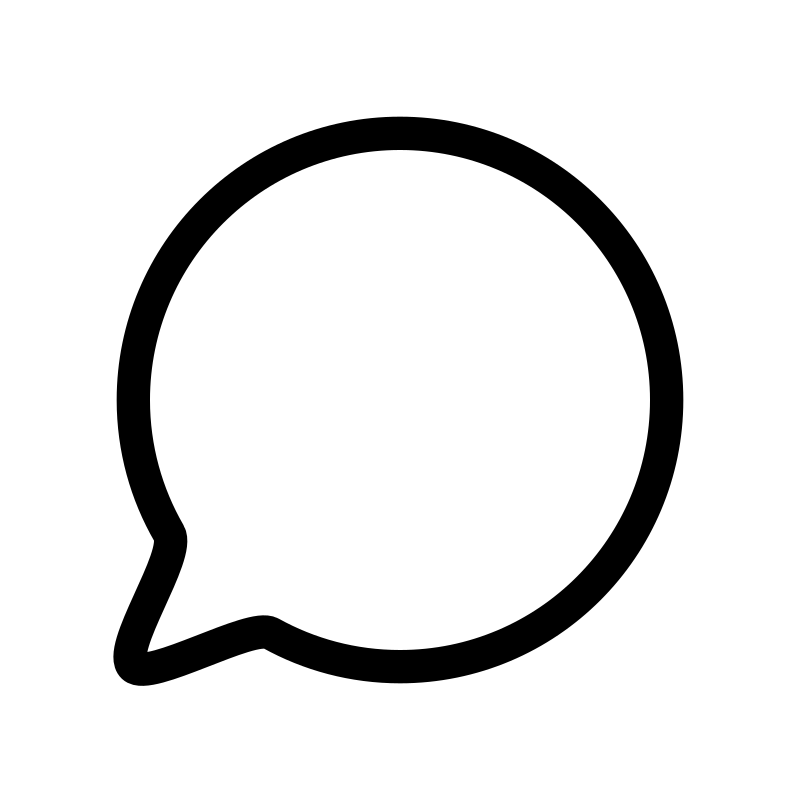

Hola Mundo, nuevamente aca para darla toda!
Texto con fondo negro 50% opaco
Texto con decoración tipo clon
Este texto es demasiado largo y se corta...
Sombras (Shadow)
shadow-xs
shadow-sm
shadow-md
shadow-lg
Redondeado (Rounded)
rounded-lg
rounded-sm
rounded-md
Anillo (Ring)
ring-1
ring-3 (default)
ring-4

ChitChat
You have a new message!
Writes upside-down
The Zero Gravity Pen can be used to write in any orientation, including upside-down. It even works in outer space.